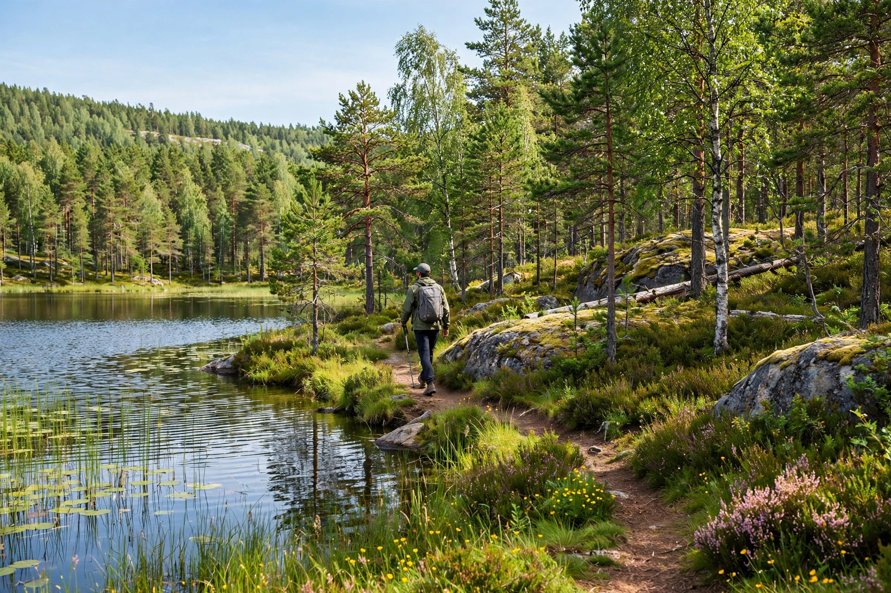

Allemansrätten (Swedish for "everyman's right") is the freedom to roam in Sweden: a general public right to access wilderness and uncultivated land for recreation, regardless of ownership, subject to the duty not to disturb or destroy.

The right permits walking, cycling, horse riding, skiing and camping (generally for a night or two), swimming and boating, and picking wild mushrooms, berries and flowers on land that is not a garden, plantation or cultivated field. Fires are allowed with care except during bans. Motor vehicles, hunting and fishing generally require the landowner's or rights-holder's permission.
Unlike Finland's and Norway's codified versions (Norway's friluftsloven, 1957), allemansrätten rests largely on custom and court practice, with the Swedish constitution (since 2011) mentioning public access to nature. The guiding principle is inte störa, inte förstöra — "do not disturb, do not destroy." Commercial use of the right has been debated in recent decades.
See also: Freedom to roam